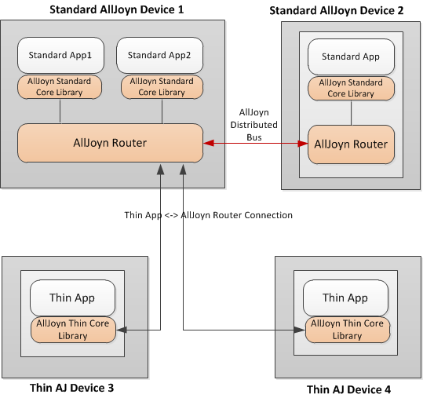
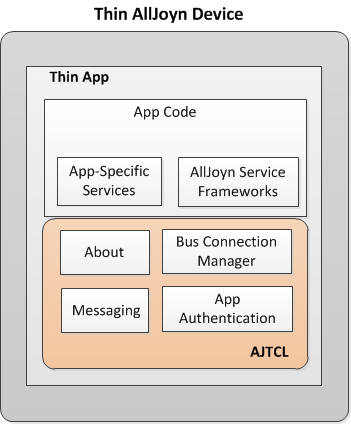
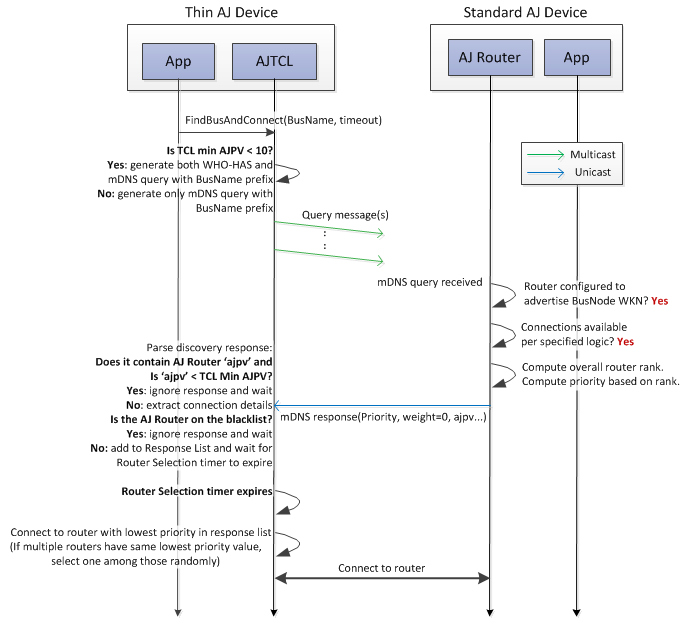
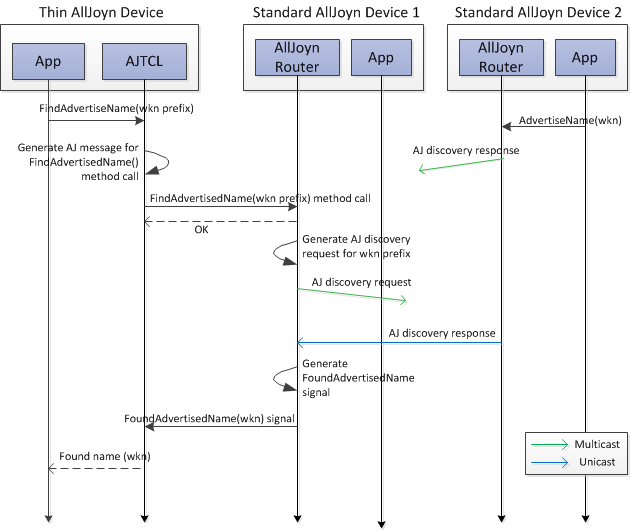

Thin Apps 精简应用程序
Overview 概览
The AllJoyn™ system is designed to operate across AllJoyn-enabled devices with different capabilities. The AllJoyn Standard Core Library (AJSCL) is designed to run on devices that usually have significant amounts of memory, available energy, and computing power, along with operating systems that support multiple processes/threads with multiple standard language environments. The AJSCL is designed for general purpose computer devices and supports application running on HLOS including Microsoft Windows, Linux, Android, iOS, and OpenWRT. AllJoyn 系统旨在实现夸 AllJoyn 设备的功能控制。AllJoyn 标准内核资源库通常应用于拥有较大内存、较大电源、较强处理能力和拥有多线程操作和多种标准语言环境的操作系统中。AJSCL 为通用计算机设计，支持运行在 HLOS（包括Microsoft Windows、Linux、Android、iOS 和 OpenWRT）上的应用程序。
On the other hand, single-purpose AllJoyn-enabled devices usually have an embedded system running on a microcontroller designed to provide specific functionality. Such embedded systems are optimized to reduce the size and cost of the product, often by limiting memory size, processor speed, available power, peripherals, user interfaces, or all of the above. The AllJoyn Thin Core Library (AJTCL) is designed to bring the benefits of the AllJoyn distributed programming environment to embedded system-based devices. 另一方案，单一目的的 AllJoyn 设备通常拥有一套嵌入式系统。该系统运行在提供某种特定功能的微控制器上。这些嵌入式系统为了降低设备的成本和缩减设备的体积，通常采用削减内存，降低处理速度，限制电源功率，删除周边设备和用户接口等方法。AllJoyn 精简内核为嵌入式系统设备提供了良好的 AllJoyn 分布式编程环境。
The AJTCL provides a lightweight implementation of core AllJoyn functionality for embedded microcontroller applications. An embedded system-based AllJoyn device (thin AllJoyn device) only includes an AllJoyn thin application utilizing the AJTCL and does not include an AllJoyn router component because of its resource-constrained environment. It borrows an AllJoyn router from another standard AllJoyn-enabled device in the AllJoyn proximal network, and uses it for core AllJoyn functions including advertisement and message routing. An AllJoyn thin application is fully compatible and inter-operable with standard AllJoyn applications on the AllJoyn proximal network. In fact, a remote application will not even know that it is talking with an AllJoyn thin application on the other side. AJTCL 为嵌入式微控制器程序提供了一种轻量级的核心 AllJoyn 功能的实现方案。嵌入式 AllJoyn 设备（精简 AllJoyn 设备）只包含一个采用 AJTCL 的精简 AllJoyn 程序，鉴于有限的资源环境，并不包含 AllJoyn 路由组件。它向 AllJoyn 临域网络内的某一标准 AllJoyn 设备借用其 AllJoyn 路由，并利用它实现 AllJoyn 核心功能，如 advertisement 和信息转发。AllJoyn 精简应用程序完全兼容与临域网络内的标准 AllJoyn 应用程序进行互操作。实际上，远程控制程序甚至不知道另一侧与正自己进行会话的是一个精简 AllJoyn 应用程序。
The following figure shows a context architecture depicting how AllJoyn thin applications fit in the overall AllJoyn distributed system. 下图展示了精简应用程序适配整个 AllJoyn 分布式系统的联系结构。

图: Thin app context architecture 精简应用程序联系结构
It shows two thin AllJoyn-enabled devices (device 3 and device 4) with a single AllJoyn thin application installed on each of them. A thin app is built on top of AJTCL and it connects with the distributed AllJoyn bus by establishing a connection with an AllJoyn router on a standard AllJoyn-enabled device (e.g., AllJoyn router installed on the Wi-Fi Access Point). The AJTCL uses the AllJoyn service advertisement and discovery process to discover the AllJoyn router via a BusNode well-known name. After the discovery phase, the AJTCL establishes a connection with the discovered AllJoyn router over TCP. Once connected with the AllJoyn router, the thin app is just like any other application endpoint on the AllJoyn distributed bus.
NOTE: More than one thin application can connect to a given AllJoyn router.
A thin app can act as an AllJoyn service provider, an AllJoyn service consumer or both. It follows the same session establishment procedures as AllJoyn standard apps to accept sessions from and/or connect to sessions with other remote apps, which can be another AllJoyn thin app or AllJoyn standard app.
Functional architecture
The following figure shows the detailed functional architecture for an AllJoyn thin application. A thin app includes app-specific code (app code) and the AJTCL. As part of the app code, a thin app can include one or more AllJoyn service frameworks which include Onboarding, Configuration, and Notification service frameworks. App Code also includes app-specific AllJoyn services if the thin app is acting as an AllJoyn service provider.

Figure: Thin app functional architecture
The AJTCL consists of some key functional modules as shown in the previous figure, among other supported functions. These include Bus Connection Manager, About, Messaging and App Authentication modules.
- The Bus Connection Manger module provides discovery and connection establishment with a nearby AllJoyn router (BusNode).
- The About module provides advertisement and discovery functions for thin app. It supports sending out the Announcement sessionless signal for the thin app over distributed AllJoyn bus.
- The Messaging module provides marshaling/unmarshaling for AllJoyn messages and routing these to the connected AllJoyn router.
- The App Authentication module provides application-level authentication and security between thin app and remote AllJoyn apps. The ALLJOYN_PIN_KEYX auth mechanism is supported in the AJTCL for releases before the 14.06 release. This auth mechanism is removed from AJTCL in the 14.06 release. Starting from the 14.06 release, the AJTCL supports a new set of Elliptic Curve Diffie-Hellman Ephemeral (ECDHE)-based auth mechanisms as described in App layer authentication.
AJTCL-to-AllJoyn router connection
Upon startup, the thin application initiates the process of discovery and connection establishment with an AllJoyn router on another standard AllJoyn-enabled device. This is done using the name-based discovery mechanism.
An AllJoyn router that supports hosting connections for thin apps advertises a BusNode well-known name. The advertised well-known name can be one or both of the following:
- Generic BusNode well-known name "org.alljoyn.BusNode" driven by the AllJoyn router configuration
- Specific BusNode well-known name advertised by an application attached to the AllJoyn router, meant for discovery only by related thin applications.
The AllJoyn router advertises the BusNode well-known name quietly, that is, the advertisement messages are not sent out gratuitously by the AllJoyn router. Instead, the AllJoyn router only sends out the BusNode well-known name advertisement in response to a query from a thin app. Also, the advertisement message is sent out quietly via unicast back to the requester (instead of being sent over multicast). This logic is meant to minimize the network traffic generated as a result of thin app-related discovery of an AllJoyn router.
The AllJoyn router limits the number of simultaneous connections
with thin applications in the AllJoyn network. This limit is
configurable as 'max_remote_clients_tcp' via the router
config file. The AllJoyn router stops advertising all BusNode
names when the 'max_remote_clients_tcp' limit is reached and resumes when the
current number of thin app connections drop down below the limit.
The connection process between the AJTCL and the AllJoyn router is split into the following phases:
- Discovery phase: The AJTCL discovers an AllJoyn router on
the AllJoyn proximal network via the BusNode name-based
discovery mechanism. The overall discovery timeout is specified
by the thin app in the
FindBusAndConnect()API call. Starting from the 14.12 release, the AJTCL supports mDNS-based discovery along with legacy discovery for discovering AllJoyn routers. Logic for this phase is captured below for pre-14.12 TCL and 14.12 TCL. The AJTCL sends out a WHO-HAS message for the BusNode well-known name following a backoff schedule. The IS-AT message is sent over unicast to the AJTCL by the AllJoyn router advertising that BusNode name. - Connection phase: The AJTCL establishes a TCP connection with the AllJoyn router based on the connection details received in the discovery response.
- Authentication phase: SASL anonymous authentication is used by the AJTCL to authenticate and start using services of the AllJoyn router.
As part of the connection establishment, the AJTCL also exchanges the AllJoyn protocol version (AJPV) with the AllJoyn router. If the AllJoyn router supports a lower AllJoyn protocol version than the minimum AJPV the thin app requires, the connection process fails. This failure or an authentication failure will result in the routing node being added to the blacklist, described in Router blacklisting. For the first-time connecting with any AllJoyn router, this connection establishment process also generates a local GUID for the AJTCL and sends it to the AllJoyn router.
Pre-14.12 router discovery
The following figure shows the message flow for the pre-14.12 release for the AJTCL discovering and connecting with the AllJoyn router.

Figure: Pre-14.12 router discovery and connection
The AJTCL sends out a WHO-HAS message for the BusNode well-known name following the message schedule as described in WHO-HAS message schedule. The response IS-AT message is sent over unicast to the AJTCL by the AllJoyn router advertising that BusNode name. Any responses received from the AllJoyn routers on the blacklist are ignored.
After router discovery, the rest of the AJTCL logic is same as described above in AJTCL-to-AllJoyn router connection.
WHO-HAS message schedule
Prior to the 14.12 release, the AJTCL supports the following retry schedule for sending WHO-HAS discovery messages:
- Send the WHO-HAS message once a second for 10 seconds.
- Wait 10 seconds, then send another WHO-HAS message.
- Wait 20 seconds, then send another WHO-HAS message.
- Wait 40 seconds, then send another; repeat until the overall discovery timeout expires.
14.12 router discovery
The following figure shows the message flow for the 14.12 release for the AJTCL discovering and connecting with the AllJoyn router.

Figure: 14.12 router discovery and connection
The AJTCL supports both mDNS and legacy discovery mechanism. If the AJTCL minimum AJPV is lower than "10", the AJTCL can connect to routers prior to the 14.06 release. In this case, the TCL generates and sends out both WHO-HAS and mDNS query messages for the BusName prefix. The schedule for sending these messages is described in Discovery message schedule.
The discovery response (either an mDNS response or IS-AT message) is sent over unicast to the AJTCL by the AllJoyn router advertising that BusNode name. The mDNS responses may include a key-value pair indicating the protocol version (the key is 'ajpv') of the transmitting AllJoyn router (this was added in 14.12 release). The value of ajpv is used to ignore the discovery response if the version is less than the minimum required by the thin app. If both IS-AT and mDNS responses are received by AJTCL at the same time, the mDNS response is processed first. Responses received from the AllJoyn routers on the blacklist are ignored.
After router discovery, rest of the AJTCL logic is same as described above in AJTCL-to-AllJoyn router connection.
Discovery message schedule
The AJTCL supports a retry schedule for sending discovery messages. It will also selectively send WHO-HAS messages depending on the minimum protocol version the thin app requests; if the minimum version is less than 10 it will send both an mDNS query and a WHO-HAS message. The retry schedule applies to both types of discovery messages and is as follows:
- Send a burst of three discovery message(s) and pause 1.1 seconds. Repeat 10 times.
- Wait 10.1 seconds, then send another burst of three messages.
- Wait 20.1 seconds, then send another burst of three messages.
- Wait 40.1 seconds, then send another burst of three messages. Repeat until the overall discovery timeout expires.
The addition of the 100 msec on the wait intervals ensures that all possible 100ms slots are covered as quickly as possible. This increases the likelihood of successful receipt of multicast packets over Wi-Fi.
Router Selection
Starting in the in the 15.04 release a feature called Router Selection was introduced. This feature enables an AJTCL to select the most desirable AllJoyn router. The detailed design description is available for download on the Core Working Group Wikipage.
The following figure shows the message flow for a 15.04 AJTCL discovering and connecting with a 15.04 AllJoyn router using router selection.

Figure: Router discovery using Router Selection
At a high level the feature is implemented in two parts:
-
The router uses a number of both static and dynamic parameters, including power source, mobility, as well as connection availability and capacity, to calculate a rank, which is communicated via the Priority field of the mDNS response packet described above in 14.12 router discovery. Details of the algorithm to calculate the rank, and how that is converted into the a DNS Priority value are in the design description.
-
AJTCL will wait a minimum of 5 seconds collecting discovery responses. For each response received the processing (described above in 14.12 router discovery) related to the 'ajpv' key-value pair and blacklisting takes place. Once the wait time is complete AJTCL will connect to the router with the highest rank it has received to that point. If there is a tie, or none of the discovery responses it receives contain a rank, it will randomly select among the equivalent routers and connect. After router discovery, the rest of the AJTCL logic is same as described above in AJTCL-to-AllJoyn router connection.
Router blacklisting
Starting in the in the 15.04 release a feature called router blacklisting was added. This feature enables an AJTCL to track routers that are incompatible and avoid attempting to connect to them again. In order to track incompatible routers (as determined during connection establishment), a blacklist has been implemented. The blacklist ensures discovery responses for routers on the blacklist are ignored.
The explicit criteria for adding a router to the blacklist is a connection failure either because authentication does not complete successfully, or because the protocol version of the router does not meet the minimum required by the thin app. The default size of the blacklist is 16 entries; the addition of a 17th router will over-write the first in the list (i.e., the list is actually a circular buffer). The blacklist only persists until the thin app is restarted.
AJTCL and AllJoyn router compatibility
The following table captures the compatibility matrix between the AJTCL and AllJoyn router across the AllJoyn 14.02 and 14.06 releases. The AJTCL using the 14.06 release is only compatible with a 14.02 AllJoyn router if the router does not require AJTCL authentication. The AJTCL default minimum protocol version in the 14.12 AJTCL is set to 11 (the version of the 14.12 AllJoyn router), but can be changed by the thin application if it does not need to use the NGNS feature.
AJTCL and AllJoyn router compatibility
| AJTCL / Router | 14.02 (AJTCL auth enabled) | 14.06 (AJTCL auth disabled) | 14.06 |
|---|---|---|---|
| 14.02 | Compatible | Compatible | Compatible |
| 14.06 (thin app not using NGNS) | Incompatible | Compatible | Compatible |
| 14.06 (thin app using NGNS) | Incompatible | Incompatible | Compatible |
Detecting a router link failure
The AJTCL provides a mechanism for the thin application to
implement a probing mechanism to detect connectivity failures
with the AllJoyn router. This can be achieved by invoking the
SetBusLinkTimeout() API provided by the AJTCL. The thin app
specifies a timeout value (with minimum timeout of 40 seconds)
as part of this API. If no link activity is detected during
this time period, the AJTCL sends probe packets every 5 seconds
over the router link. If no acknowledgment is received for three
consecutive probe packets, an error is returned to the thin application.
At this point, the thin app should re-initiate discovery for the AllJoyn router.
Thin app functionality
As mentioned previously, the AJTCL supports all of the key AllJoyn core functionality as a standard core library. APIs are provided as part of the AJTCL for the thin app to invoke core functionality. The AJTCL in turn generates appropriate AllJoyn format messages (for method_call/reply, signals etc.) to invoke related APIs on the AllJoyn router. The AJTCL sends the generated AllJoyn messages to the AllJoyn router to accomplish the given functionality. The thin app message flow for core functionality is similar to the standard app with the key difference that the thin app is connected remotely with the AllJoyn router.
The following figure shows an example message flow for a thin app discovering a well-known name prefix.
NOTE: The AJTCL and AllJoyn router exchange data using AllJoyn messages (method_call/reply and signals).

Figure: Thin app discovering a well-known-name prefix
The AJTCL provides support for following core AJ functionality:
- Service Discovery and Advertisement: Both legacy Name Service and Next-Gen Name Service functions are supported.
- About advertisement
- Session establishment
- Sessionless signals
- App layer authentication
- The AJTCL provides app layer authentication so that thin app can implement secure interfaces and also access secure interfaces on other AllJoyn providers.
- New authentication schemes are supported in the 14.06 release (see App layer authentication).
Thin apps can also include existing AllJoyn service framework functionality by bundling thin app-specific libraries provided for these service frameworks.
App layer authentication
The AJTCL provides support for app layer authentication for the thin app to implement and access secure AllJoyn services. App layer authentication schemes supported are different in release prior to the 14.06 release and starting from the 14.06 release as described below.
Prior to the 14.06 release, the AJTCL supports ALLJOYN _PIN_KEYX auth mechanism for app layer authentication. Also, SASL protocol is used for authentication.
Starting from the 14.06 release, ALLJOYN _PIN_KEYX auth mechanism is removed from AJTCL. New Elliptic Curve Diffie-Hellman Ephemeral (ECDHE)-based auth mechanism were added to the AJTCL:
- ECDHE_NULL is an anonymous key agreement. There is no PIN or pass-phrase required.
- ECDHE_PSK is a key agreement authenticated with a pre-shared key like a PIN, pass-phrase, or symmetric key.
- ECDHE_ECDSA is a key agreement authenticated with an asymmetric key validated with an ECDSA signature.
The use of SASL protocol for authentication is removed from the AJTCL in the 14.06 release. Instead, an AllJoyn-based protocol is used for app layer authentication.
Auth compatibility
A 14.06 thin app cannot interact with a 14.02 thin app over secure interfaces and vice versa because these apps support different types of auth mechanisms. These apps can still talk to each other over non-secure interfaces.
The following table shows the thin app compatibility matrix across the 14.02 and 14.06 releases.
| 14.02 provider thin app | 14.06 consumer thin app |
|---|---|
| With secure interfaces | Incompatible |
| With non-secure interfaces | Compatible |
| 14.06 provider thin app | 14.02 consumer thin app |
|---|---|
| With secure interfaces | Incompatible |
| With non-secure interfaces | Compatible |